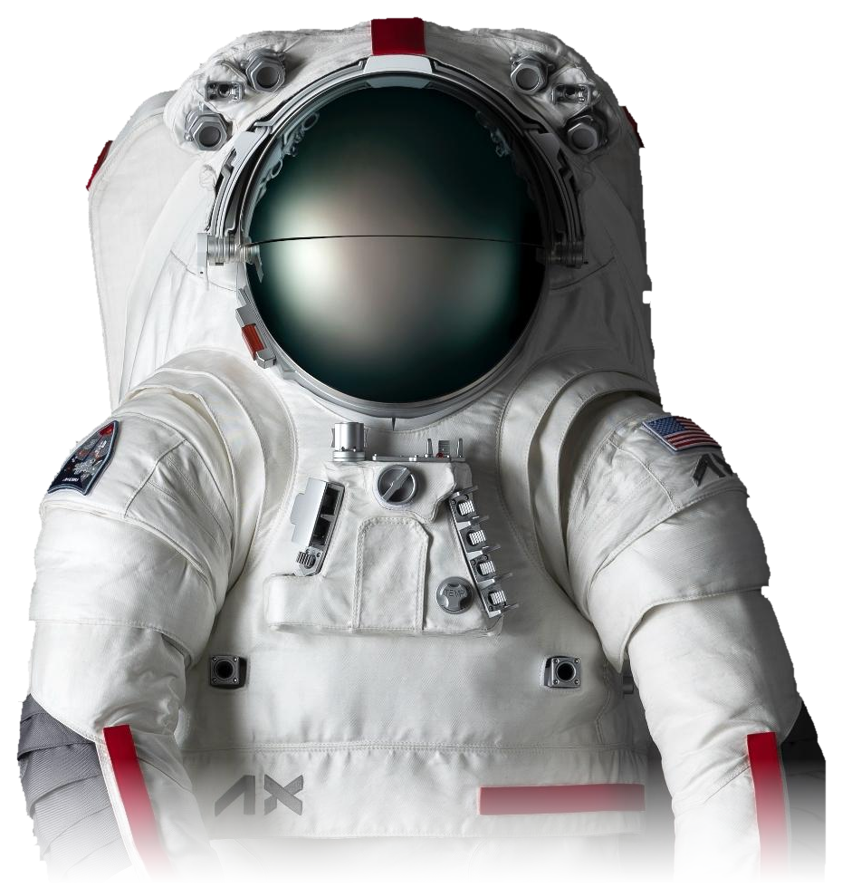

01Enter 9 Quick Vitals
Record key vitals and environmental metrics, or load calibrated crew baselines.
Hardware-free physical & movement triage for spaceflight crews, grounded in NASA flight medicine baselines.

Record key vitals and environmental metrics, or load calibrated crew baselines.
Assess posture, gait balance, and eye fatigue through computer vision without wearable sensors.
Obtain readiness scores, inspect affected systems on the body hologram, and follow clinical countermeasures.
Select crew profile and enter clinical telemetry in seconds.
Open Scan Stage 1 →Check upright balance, gait symmetry, eye fatigue, and visor alignment.
Review immediate countermeasures, inspect the 5-system body map, and monitor trends.